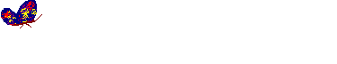

Daydrop-2025

Based on the content of the diary entries, it seems that “daydrop” may refer to daytime sleepiness and
regular
napping.
As shown in many diary entries, the author often felt tired and took naps during the day, and sometimes
had confusing dreams.
This condition is often related to the author's emotional state and sleep quality, and
affects the rhythm of daily work and life.

𓃈01/24/2024
2024年了，距離上一次紀錄日誌已經過去了三個月。在去年日記的末尾，結束了和therapist將近一年的session，那時候想起M說過她和therapist提前結束諮詢時說：「停在這裡就很好」，像一場安靜平靜的分手。人與人的關係如此階段性，我想學會如何放下我執。我就這樣使用著anna教會我的coping
techniques、維持使用藥物，慢慢流淌進了2024年。
時間的三個月溪溪流之中，發生了很多事情：Z搬來了紐約，直到現在還是沒能適應多一個人的生活，有時覺得幸福，有時又懷念熟悉的孤獨；準備完了作品集，文書在朋友們的幫助下改了幾個版本，在年尾提交了Yale的研究生申請；照常的插畫工作、去pioneer
works參與了不錯的書展、休憩；過了生日，27歲，數字只像一口氣吹過；和朋友們一起，重新學習鉤針和串珠，維持著每週一聚的頻率；紐約稀稀拉拉地下雪，積不了兩天就盡數融化，留下多餘的融雪劑在路面。情緒時好時壞，圍繞著月經週期起伏，我像躺在潮汐中，仰面，不停歇地飄蕩。
早上做了夢，夢到一場突如其發混亂的槍戰，人群逃竄，不少人中槍受傷，我給媽媽打電話，接電話的醫院說已經救不回來，但不是因為槍戰，而是她的舊病復發。做夢很奇妙，幾年前讀《夢的解析》說大腦會把現實裡的很多元素雜糅相融，客觀上明顯不合理，但夢裡的你心甘情願地角色扮演。醒來後想到未完成的工作，有些難受，打開軟件又因為文件的龐大卡頓，覺得一切都很沒勁。在床上睡了一覺，收拾了快遞，在繼續工作和寫日記間糾結，決定重返此處。
微博也幾個月沒有使用過，打開後是難以忍受的吵鬧。每個信息被擠壓著推到眼前，實在是太多、太滿。感覺自己已經絲毫沒有所謂“事業心”，不想再經營網絡人設，費盡心思盤算文案、關注和點贊。everything
will
flow，就算做過什麼大項目，出了名，賺了錢，這一切也都會過去。想著別人會喜歡什麼樣的東西，把自己束縛在原地，所有事也都會過去。朋友圈平時也是關閉的狀態，昨天打開，不少人開始宣傳農曆新年的工作，基本都以“很榮幸和xxx品牌合作⋯⋯”開頭，想到上次聽播客提到朋友圈已經變成了工作宣發圈，我感覺索然無味，關閉了發現頁。
對於考研的焦慮仍舊存在，我仍舊把上學當作一個目前窘境的可能性出口。今天又聽了一遍初學者電台講Hans的《do
it》，自己想要做的項目也很多，所以希望去上學。二月份會有一些初步的結果。申請如果沒有成功，那我也可以鬆一口氣，去旅遊放個假。
𓃈04/24/2024
萬物復蘇，生命循環往復。每一次在公園的外出都瘋了一般給凍僵的自己松土。昨天讀衫浦康平，他說現在的人提“我”太多了，碰巧今天在看外文作者的書，講他建立了一個滿滿是“我”的國度。很奇妙，這一刻發掘到過往閱讀和觀看時的不適，就來自於現代人過多，滿溢的“我”，讓人厭煩。韓炳哲講現代人自戀，也是在談人過多地關注“我”。回想這幾年在思維模式上的變化，同時也是情緒病逐漸好轉的過程中，最重要的是擺脫自戀，才從臨湖水仙自觀的凝視中轉開視線。
抑鬱是一種自戀的疾病，一針見血，一語中的。
𓃈04/25/2024
“關於家的想象一直在被解散、然後重構。”
昨天早起，去了從沒去過的moynihan 車站，像個機場，到處穿梭一些看起來光鮮的白人。和grand
central車站行程對比，那裏地上躺著流浪漢。想起來想幾天在小紅書刷到的段子，留學生拍了時代廣場地鐵站裡的流浪漢床鋪，標題轉租房間，說交通四通八達。長大出國後，家的概念分化為抽象的“家人”和“住所”，沒有哪個方向可以永恆占有。
坐一個多小時的amtrack去紐黑文看房，上週聊了一個即將畢業學生的房子，佈置得像個家，但那對夫妻畢業後還是搬走。房間的氛圍很舒服，窗戶不大但光線柔和，從後門直達教學樓後門，看完房下樓就碰見X和D在抽煙。聊了一會天，出發去看公寓，很大，佈局也很喜歡，於是我又開始幻想未來的家：哪裏擺工作桌；廚房如何佈置；客廳要不要佈置一個朋友來拜訪，或者週末安排workshop的空間；裸露的白牆是不是可以終於可以掛作品，或者毛線。以前上學的時候，想到既然住所無法被永恆占有，也不會花太多時間精力營造。現在不一樣，已經有太多的物品，考慮這些物品的住所就要像考慮自己的臥室床鋪一樣平等。
回紐約的車上繼續編織。編織成為了今年一直在做的手頭功夫，沒有稱為“堅持”，因為堅持好像總有點勉強和對抗的意味。我想幹就可以幹，做累了不幹就是。編織是一項誠實的勞動，和種菜一樣，是花費了時間就一定會有成果的，最樸實的重複行為。我不想做產品，陶瓷是，編織也是。產品將勞動異化，變成了成本，風險與收益，我想我很多行為都是在嘗試在資本主義的績效社會離做一種出離，因為逃離不可能，真正意義上的避世隱居不可能存在。只可以寄託一些短暫的出神。編織裡的感官體驗也很奇妙，這不是一項無需動腦，盲目堆積的過程。我著迷於鉤花，本質上是秩序的構建，需要觀察，計算。在秩序之外的意外也可以容納，無須過分小心翼翼。嗅覺，毛線有自己氣味，羊毛的味道是暖的，蓖麻是乾燥的，布條線是緩慢的，而便宜聚酯纖維線的味道是膩而冰冷的。
𓃈06/29/2024
回國一週，慢慢習慣起來。溫度、氣味、人、車流、三環和西五環、夜晚十點還熱鬧的商圈⋯⋯玲瑯滿目，川流不息，信息和圖像呈現壓倒性的趨勢侵入目光之中。所有人都在說話，在現實裡吆喝，在直播間叫賣；沒有現金，掃碼掃臉支付；沒有明碼標價，得搶優惠券才划算；室外是巨大的熔爐，乾熱的風讓人回想起加州死亡谷。只能加速腳步鑽進商場盒子房，點一杯冷萃或者楊枝甘露。
三年沒有呼吸過這樣的空氣，像個過時的老年人或者剛識字的兒童，學習所謂“便捷支付與出行”。事情和環境斷裂著，跳躍著，在過去和當下劃開裂谷，有時候徘徊在邊緣，有時候在峽谷兩岸牽針引線，好搭建一座新的橋來緩慢通行。體驗，體驗，抱著最天真的目光來觀望，新鮮勁過去之後，又會是什麼樣呢。我沒有這份勇氣，而底氣來自於兩個月後的再次離別——家，家鄉的概念，已然被重構。舊家被出租，母親商量著賣新家的房。家在哪？家是什麼？是不是跟藝術一樣（貢布里希說：沒有藝術，只有藝術家）——沒有家，只有家人？家不是永恆佔有，人挑著那部分最關於記憶的扁擔，打包，遷徙。是的，還是關於記憶。物品是記憶的硬盤，五感是最直接的神經突觸。搬家，把記憶封存，再開箱時，它們隨著觸視嗅魚貫而出，記憶像水蒸氣冷凝為水珠，滴答滴答落地成形，你知道記憶又回來了。如果再遠一些呢，如果行李限額，如果貨車滿載，如果丟失或被盜竊，如果阿爾茲海默⋯⋯沒有什麼能永恆佔有。
𓃈07/09/2024
半年前我寫道：「接受。接受孤獨。接受上週放進去的bisque這週還沒有燒出來；接受吃了安眠藥還是沒能睡好覺；接受吃了一點主食就會變胖；接受吃油膩和辣的食物皮膚便會長痘、變差；接受不做家務就要忍受果蠅；接受三天不吸塵就會過敏；接受不遮光的百葉窗簾，然後接受早上6點太陽日出就會立馬甦醒。接受被拒絕，接受失敗，接受不被欣賞，接受過程可能沒有任何意義，接受成果要以星期月甚至季度或者年為單位。接受，全盤地接受。」
那是一段苦悶的時光，現在看來卻是一個流變行將發生的臨界時刻；一个更高级的人格创造，用心理学的话来讲，是一种「认知」或者「态度」。一种超越与治愈发生在全然接納（Radical
Acceptanc）后，产生的效果是宗教式、超验的，也是自愈性的转变。「在山头上往下看到的山谷里的大雨，这并不意味着这场暴雨不是真的，不同的是你之前深陷其中，现在一览众山小。」荣格的福塔思的伤口与浮士德的分裂，产生于我过去接受的现代科学史理性主义意义上的教育过程。接纳感知潜意识，我的察觉在于，这些伤口和自虐倾向的化解方式是，需要先将压抑的潜意识提升至意识层面后，方能解脱出。「这个高级别意识会客观看待这些感受，然后告诉自己：我知道我在受苦。」
𓃈07/17/2024
時間像在夢裡輪迴，相似的細節每次親歷回憶又不同。轉過神看見車窗外現實的世界，藍天白雲——童年和青春都遠去了。
是的，這次回來最大的體驗便是如此簡單，朋友們幾乎都完成了從學生到社會人的轉型，我的青春記憶都遠去了。週一去海上世界，童年無影無蹤，明華輪佇立在繁榮的商業新區，永遠有年輕的小孩子在熱熱鬧鬧。寫下這些並不是為了緬懷什麼，過去已經過去，沒有什麼可以耽溺。回到家鄉，再一次印證三年前的失落，我只是離家鄉越來越遠了——現實層面的，形而上層面的。對關於「懷念」的感情感到疲憊，無論是地方還是人。
今天去燙了三年前差不多模樣的頭髮，我想要的並不是這樣，但結果還是一模一樣。小時候會因為理髮師傅剪壞了劉海嚎啕大哭，現今只覺得再長些一切都會變好。Z說我變瘋了，我說我看開了。回來還是好多遺憾，可能並沒有時間去上海見當時在紐約的朋友們了，一個月已經一晃而過。每週都有事情待辦處理，沒有興奮，也沒有難過，一切都像無風無浪的淡水湖。
𓃈7/18/2024
人是地緣性的。回到中國，去見在北京、深圳、佛山、中山、廣州、上海⋯⋯的朋友，或者去見從深圳分散到全國的朋友，或者去見以紐約為起點分散到全國的朋友，我時常感到悠長的空虛在迴響。人暫時定居在某個地方，以此為地緣性紐帶建立起關係，但只是暫時，一切回歸那個永恆的理論——沒有什麼是永恆。回來並沒有得到想象中的休息，連想去回顧的地方都沒去幾個，廣東的氣候大部分時間炎熱到無法外出，小部分時間無法預測的下暴雨。好巧不巧又開始連續忙碌的項目，窩在房間裡，放眼望去是刺眼的白日陽光。在深圳沒有足夠的刺激，沒有文化，沒有藝術，各種被販賣的焦慮撲面而來。這裡只剩回憶，不過回憶也會淡去。以後我還是不會長久地回到這裡。
𓃈08/04/2024
短短下午覺，做了好多夢。
夢到自己不是家族裡做受寵的那個孩子，拿着一些証據和姨媽還有外公對峙，每個人都有一颱電腦，她們導入文字到幻燈片操作得比我還嫻熟。我一直質問爲什麼我是家族裡最有出息、學習最好的小孩，爲什麼你們就那麼寵溺家族裡的表哥和表弟，是不是因爲他們都是男孩？醒來後才覺得荒唐至極——我在夢裡爭執的是自己沒有得到更多的壓歲錢。外公已經去世很久；姨媽們忙於自己的孩子們無可厚非；小時候的其樂融融的春節團圓早已無影無踪，又想起那首詩：二十九年雨打風吹去。
還夢到在波多黎各旅行，行程結束才想起沒有回程機票（當時已經意識到是夢，甚至在焦慮中醒來，後來想着體驗一次也罷，看了下手機時間後又回到夢裡）在街頭晃悠進一家旅店，對麵是酒吧，有旅客坐在沙髮休息，穿戴整齊的小偷偷走了我的漫畫報紙，被身邊的女性旅客提醒，後來跟着她們在旅店玩織佈機，看鼓樂隊演出。
這幾天情緒有些低迷，可能因爲斷藥，晚上睡眠還算可以。三天之後又要離開家，很難説完全不焦慮。從紐約搬到新城市上學，從相對鬆弛的自由職業轉爲學生；全新的人際交往；對身體健康的新要求；創作上的新方向；諸如此類，等等等等，更別談繁雜的前期工作，接貓，搬家，收納整理新家。
𓃈08/25/2024
搬來紐黑文剛好十天。新家裡還沒收拾完，蹦跳的氣溫讓我斷斷續續感冒著。從舊所搬來的家具和物品猛然攤開在大了兩三倍的生活空間裡，連體積都顯得小了許多。昨天從facebook
martket上搬回家巨大的沙發，差點塞不進電梯。過去的七年間一直生活在紐約的合租公寓裡，「空間」是很奢侈的概念，必須想盡辦法地收納，方寸都塞滿。沒有對於寬敞住所的概念，轉換到獨自居住也是很新的體驗。和Z把附近的grocery走了遍，去了攀岩館，今天還坐校車去trader
joes，很多事都通過模仿在紐約的生活裡找到一些安定感。
學校orientation了將近一週：國際生見面；整個art school
social，workshop，玩一些像幼稚園或者老人院的破冰遊戲。明天又要繼續：部門開會，抽籤studio，各種設施的training，然後就是開學。心情有些複雜，又期待，又有些焦慮，許久沒寫日記，感覺文字和語言能力也有些退化。最近有些不自信，覺得頭髮怎麼樣都不夠好看，希望卷的部分快些長長。對開學也有焦慮，不知道上課會怎麼樣，自己會做怎樣的作品，以及身體狀況能否支撐學習的進度。對於同學，講peer
pressure或許不夠準確，因為許多人都工作了幾年，也有些很年輕、剛畢業的學生，orientation講這裡像「Stir
Fry炒飯」而不再是「Melting熔爐」，每個人可以維持自己的形狀混雜在一起。
𓃈08/29/2024
department開會，講課程設置，分配studio空間。Prelim的選擇只有一排，我不是抽籤幸運兒，抽的是6 out of
7，原有空間的人還沒搬走，到時候又要添置新的家具，多一輪的setting
up讓人有些焦慮。可能今天只是累了，不是很有能量來處理繁雜的程序。我希望快點能安頓好一切，然後多在studio裡面學習和工作，我希望那是一個讓人舒服的地方。
對了，還有很討厭的暫時還沒收尾的插畫工作，耽誤時間。腦子裡好亂，做什麼都不舒心。想快點睡覺。重新上學的感覺好複雜，上周開始orientation
延續到這週三第一天上課。目前還沒開始做項目，從過去幾年已經習慣的home
studio和自由職業的模式轉換到cohort，每天固定見同一批人，在分享一個空間裡的一小塊半私密工作位。前天搬了桌子，書架，一些書和一些本子去studio，想要儘量把注意力集中的重心往這個空間轉移。但有時候感覺自己像個書呆子，有些孤僻。別人聚在一起能閒聊2小時不做事（今天下午就經歷了，我不知道他們到底為什麼那麼能聚眾聊天）我不行，我在工作室必須要做事或者讀書，要麼就乾脆回家一個人待著充電。我覺得這樣的行為毫無意義，但對某些人來講有意義，或者是ta們上一段生活經歷（無論學業還是工作）的延伸。可能每個人來MFA的目的都不一樣。不知道，很奇怪的感覺。
週三上gd
histories，我一直在想那個問題：「design是什麼時候、如何，從一種practice成為discipline」。我想做的是什麼？我過去高強度輸入的知識怎麼輸出？在這個階段我該專注在那一方面？媒介？還是視覺實驗？或許可以都做。但這樣又有點回到本科大一結束的迷茫階段，那時候老師跟我說「去找風格，並堅持一段時間」，而現在想擺脫的正是「形而下的風格」。把自己當作海綿——吸氣、呼氣、排空。先懸置疑問，無為地打開、敞開。實驗、實驗、實驗。
今天久違地賴床睡到了11點，希望明天可以正常作息起床，還是很期待A的字體課。
𓃈09/08/2024
這週開始睡眠變得不穩定，連續兩天在凌晨4:33分醒來。有時候做惡夢，把自己喊醒，然後心臟劇烈地跳動。昨天夢到媽媽，在原來深圳的房子裡的陽台上跨著高空給天空中的植物澆水，來來回回。房子在9樓，底下是馬路、行道樹和一樓別人家的院子。小時候養的兔子從這裡不小心跌下摔死。我擔心著看著媽媽橫跨高空，來回往復，一個踩空她就掉下去了。我大喊著“快抓住什麼”後驚醒。這個夢在反覆入睡後還是清晰。
這週正式開學，把所有的課上了一遍，作業和閱讀逐漸累積起來。Work-Study的培訓完成，找了printshop和design digital print
lab的兼職，還沒開始正式上班。部門仍舊不停地發出通告和活動，同學們似乎也還沒忙起來，四處張望著這裡那裡發生了什麼，現實世界眼花撩亂，筆記本電腦上的窗口擁擠疊加，一種物理和虛擬共鳴的狀態。
做學生意味著什麼？回想這個問題時，我方才意識到從小到2021年畢業前的階段，都只擁有「學生」這一單一的身份。
時隔三年回到校園，但好意思說自己已經忘了「如何作為學生」嗎？過去三年算是進入社會和職場了嗎？
現在的學生身份又是之前所討論的純粹的「學生」嗎？想清楚來讀書的目的，每當覺得懷疑或者後悔時，就去回想吧。
回想之前的糾結，想要學習新東西的衝動，對新環境的渴望，以及真正來到新環境後心理適應的過程。
紐黑文，很小的城市。之前作為遊客來當天往返，吃一頓泰餐，走馬觀花校園，每一個地點是散點，直到真正生活在這裡，才成線成面，記憶裡很抽象的地點被濃縮在googlemap上星標地點，之前去過的地點卻沒有再去訪問。
當時沒能記下名字的地點，隨即也就在現實裡消失。這週的design history聊到 *psychogeography*和 *derivé*，講地理對心理的影響。我喜歡上學時接觸新概念的狀態，推著自己思考，活在校園的當下，不去想什麼就業和現實的問題。我仍會擔憂如何創作，和自信無關，而是總覺得失去這樣的擔憂，也就失去做出進步的驅力。獨處，需要獨處，所以今天翹了下午的field
trip。身體在昨天的攀岩運動後令人舒服地酸痛，我現在窩在床上讀reading，我必須接受這樣的平靜，這是一種轉變，是的。
𓃈09/25/2024
這麼長時間沒寫日記了？最近的狀態有些不好，寫下這些像給某人寫信。似乎從上上週當天往返紐約進行talk之後，身心就一直疲憊得恢復不過來。是太久沒有獨處來恢復精力嗎？每天都要往返學校，在studio樓裡上上下下，難免碰到人進行small
talk，但有時候連簡單的笑容都覺得費力。週末又回紐約了，書展忙得沒有停歇。沒有時間逛展，沒有時間和朋友們相聚，周天結束的當晚把書放回Z家後又趕去車站，晚飯也沒來得及吃，本來想吃拉麵來著。上完週一的課，週二起不來床，逼著自己去做了學校文件的處理，下午逛了下peabody
museum，巨大的恐龍骨架懸掛在展廳，下方是三葉蟲標本，塑料質感，光滑的表面，被定格在櫥窗。前兩天媽媽打來電話，要賣掉小時候的鋼琴，我說那就賣了。在年齡的某一個階段選擇捨棄，只能冷漠相對。實體物質多麼奢侈，佔據的空間，遷徙時耗費的人力，在留下和丟棄中選擇後者，一切都會過去。
做作業的時候總會覺得自己是個無聊的人，不是變成了無聊的人，而是從來就是一個無聊的人。其實好想法好靈感的來源就是很稀有，大部分時間無論是自己還是他人都在生產垃圾、製造垃圾、完成垃圾。但另一方面做了又總比沒做好，完成了比完美更重要。很多結果都是在龐大的垃圾堆上拾荒出一小顆寶石，只不過我現在全部都要推翻重來。有很多固有的問題：畏手畏腳、害怕別人的評價、止步於失敗品、等等。是以為自己改進了，但重新進入學院後又復發的問題。做創作是一個巨大的scavenger
hunt遊戲，我又止不住地質疑這個過程，然後就得去看看Corita Kent說的「The only rule is work. Consider everything a experiment.」
𓃈09/30/2024
‘Often what appears to be enthusiasm for a certain visual aesthetic is actually the result of
enthusiasm for a certain set of processes, like an interest in analogue tools or digital modelling.
The way and the why behind creation vastly vary from person to person: some creatives are driven by
an obsession with formal experimentation, and use their work as a place to push boundaries around
mark-making, while others are passionate about a certain subject area — food, sports, fashion — and
create work primarily as a way to participate in that culture. Others are language and
concept-driven first, and value formal qualities primarily for their ability to convey a certain
message; the use of any particular forms or visual tropes are simply means to an end. In all cases,
a creative’s work and the perceived “style” it typifies are simply the unified product of a person’s
taste, ideas and craft; style is bottom-up, not top-down. Designers don’t adopt visual aesthetics
for their surface appeal. Rather, their surface appeal reflects the deep personal meanings hiding
just beneath the surface.’
Graphic Design is a way of seeing. People are filters, fiters make people.
設計或許是最universal的語言，是滿足好奇心的透鏡，是積木。在耶魯的體驗是，或許我並不喜歡某一個人的作品，也不是某位老師的狂熱粉絲，但每個人都是有研究方向和思考，也是所謂風格形式之上的思想結構。近期在思考是關於解決要做什麼樣的設計或者「創作」，不是從商業角度考慮，而是完完全全地個人興趣導向，因為有強大的個人自驅力，才能在冗雜的實驗探索過程中存活下來。
𓃈10/12/2024
整整一週我都在排Quinn Latimer的 *Snakelike, Through These Grasses: Some Notes on Serpents and
Portals*。逐字逐句——將所有並列的排比句拆成單行；將所有的並列詞拆成豎列；將詞詞和詞前方的空位精確調整為一致；標註上閱讀的節奏，例如呼氣與吸氣，停頓或者口吃。像蛇的鱗片，整齊、有序；又像蛇的運動，曲回、蜿折。排版的進度平滑地向下延展，像樹叢的蛇在枯葉上平滑地前行。乾眼症有些發作，必須要停下來。
今天去East
Rock徒步，在陽光穿過闊葉林斑駁的空隙裡，在秋天和冬天的間隙裡，在紅葉的沙沙作響裡，在野外的小徑上，我抄著近路向山的制高點前進。突然間我看到了蛇——一條小蛇，黑綠色的皮膚，宛若無物地在枯葉上平滑地前行。我尖叫起來，蛇快速滑入業叢，在它絕妙的擬態中，和環境融合。進化論究竟是對是錯？人類的集體潛意識是不是真實存在？在作為哺乳動物的原始本能裡，對蛇的恐懼一定是普適存在。那部分的恐懼是不是像蛇毒一樣轉錄進了人的基因中，直到現在的我體會到了，於是僵在原地？在Quinn
Latimer的寫作裡，她寫道自己寫那篇文章時，也在現實裡遇見了蛇。她的朋友說她一定是把那條蛇召喚出來了。我沒有期待今天能遇到蛇，也從來沒有見過野生的蛇。我是不是也把蛇召喚出來了，像她一樣？
沿著蛇型的公路下山，像蛇一樣溜進湖底。
𓃈11/03/2024
最近的狀態實在不好，崩潰了好幾次。昨天上完typography的final
review後，跟老師和同學們去酒吧喝了一杯酒，老師請客。
和N，X兩人討論即將結束的這一學期，大家都覺得迷茫。
X說研究生像一場自助菜，一般的學校提供兩三盤，好的學校提供十盤。學生能從中挑到一道菜，讀研就是值得、有意義的。但我還是感覺不滿、不甘心。這幾個月體驗到太多次的挫折和失敗，然而失敗本身有說明不了是一種啟發性的幫助，只覺得空虛，被掏光、挖空，接而意識到自己在何處無能為力、分身乏術、江郎才盡。
回到工作室想到新接的工作需要提交創意方向了，實在不想再動腦，回家，回床上沮喪地躺到十點，哭了一場，洗了個澡，決定不乾了。今天六點半起床把方案提交了，agency說很清晰，我久違地又感受到工作時的正反饋。在學校，談不上正反饋負反饋，我不在意有沒有嚴厲的critique，但整體像被籠罩在無頭蒼蠅和熱鍋螞蟻之間的迷霧中，找不到道路，摸不清方向，Z說原來畫插畫的我是找到了武林秘笈，碰巧會了頂尖劍法。現在的我是個回寺廟修行內功的僧人，自己選擇丟棄劍與劍法，當前是心法的修煉。我同意，這段時間經歷中最大的體會就是讀研是一種修行，只關於自己。導師能指導的部分太有限，自己開悟的時刻還需要時間來抵達。不能著急，而我怎麼能不著急。說不出來，寫出來也羞恥，我發覺自己過早嘗到了被關注的快感，怎麼能說不享受過？理性讓我從金玉其外的蜜糖中走出，放下過去，向前進，去改變，去轉型。可腦子裡總有「轉型失敗該如何是好」和「會被看笑話」的念頭。那種拉扯感又回來了，是的。很久沒有做關於個人的創作，這些關於創作和自身存在本身的思考、痛苦、焦慮、悲傷被給定的工作隔絕在外，哪怕做不好工作也可以歸罪給甲方。現在不能了，所有的創作都是關於「我」或者「self」的投射，所以那些灰色的情緒又回來了。
我感覺自己錯了，我並沒有康復，我只是有一段時間沒有去面對創作的困擾了。
⁂Thoughts on 11/08/2024
Design is about communication, I didn’t doubt that.
What haunting and lingering around toward these pre-set structures that I am currently involved.
I made things always like miming, mazes, labyrinths.
I’m not begging for communication.
But doubting it’s another form of egoistic even though I keep saying I have hidden/erase my ego
behind/under.
Limitation, Boundary, Intention,
-one becomes the process you would prefer to be involved with.
I’m a vision/perspective/filter/transformer;
✴︎Question on 2/20/2025
What’s the difference between “storytelling” and “didactic”? → iconography/presenting/teaching sth?
What is storytelling? → engaging? → why I need engaging?
Why I’m not interested in storytelling?
I’m a vision/perspective/filter/transformer.
Graphic Design is composing composer instruments; designer texturizes images & text.
𓃈12/08/2024
瘋狂的夢。夢到自己是個高中生，走讀上學，學校卻是小學的那個校園——位處城中村，學校後面是肉菜市場，前面有一面鐵門，平時是關上的，放學才打開，出去就是城中村，魚龍混雜，各種社會閒散人群一簇一簇。我背著書包走出鐵門，書包裡的物品是：貓條，餅乾，照相機，手機，試卷。把背包放在一個椅子上，想稍作休息，突然間一大群人湧出鐵門，人擠人，混亂之後，書包不見了。我很著急，匆忙開始找書包，從這一天的課所在的教室開始，從四樓找到一樓廣播室，甚至開始懷疑今天自己有沒有帶書包。突然想到小學時，當同學發現書包被偷，會繞著城中村找一圈，一般小偷會在偷到包後繞到建築樓的背側，拿走有用的東西，然後把書包隨意丟在地上。我開始順著高矮不等的建築尋找，找到一家街機店，內部氛圍烏煙瘴氣。脫下校服，跟老闆交涉，他命令人打開一扇安全門，在裡面好像圖書管理員幫忙找書一樣，挑出了我書包裡丟失的東西，都用物證袋裝著，一個不落。
𓃈03/06/2025
Daydrop-2025
a website is a net🕸️
I'm a spider🕷️
Yesterday and today I've been wandering around are.na browsing the world wide web, from simple
HTML-framed web pages in the early days of the www era to a wide variety of java interactions,
splitting up in the history of the internet, with the tabs filled with “world wide web” (if you want
to translate it directly);
I’m a vision/perspective/filter/transformer.
I find myself like a spider, the eight nimble legs are the middle fingers on the trackpad, and
the light jumps are the double clicks of the index and middle fingers.
I visit a web, I leave a web, and there are webs in all directions.
I should weave my own net now,
step by step, thread by thread, knot by knot.
𓃈03/18/2025
迪士尼遊樂場是巨大的人造景觀。它模仿雨林建起河流，它復刻黃金年代sunset
boulevard在街道兩旁豎起建築，它想象光速旅行和千禧年鷹隼飛船，它告訴你永遠有孩子，而孩子永遠會做夢。它是不是假的取決於你信不信，一種belief system在此刻發生。
旺期的遊樂園總讓我想象它淡季甚至廢棄的模樣。從某種意義上，沒有觀眾的遊樂園就是廢墟。毫無疑問我是現實主義者，這一點在旅行中時常十分掃興。在和朋友的出行中，城市和遊樂園迅速耗盡我的能量，而大自然相反。我喜歡樹林、河流、山脈⋯⋯人的社會結構在那裏暫時不存在，更廣義上的生命的循環在那裏發生。植物生長，想起人類學seminar裡討論植物的“social”——高大樹木沒有朋友，低矮叢林遍地交友；植物落敗，菌落便就地建立網絡。一切的一切都相互聯結，人所能瞥見的表層微不足道。而遊樂園作為一種人造景觀，自然要把角落都盡情展示才好。虛構的景觀就從二維動畫片發育成三維，再落地到現實裡在造景中講故事，遊覽的同時你也是演員。一切的一切都是舞台，一種極力逼近真實卻永遠無法達成的捉迷藏。在這種情境上，我時常覺得疲憊——人造景觀無法自圓其說，而我不想演戲。